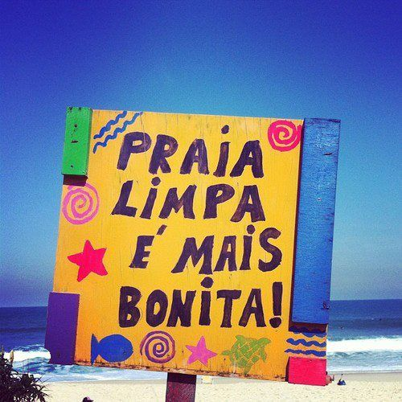
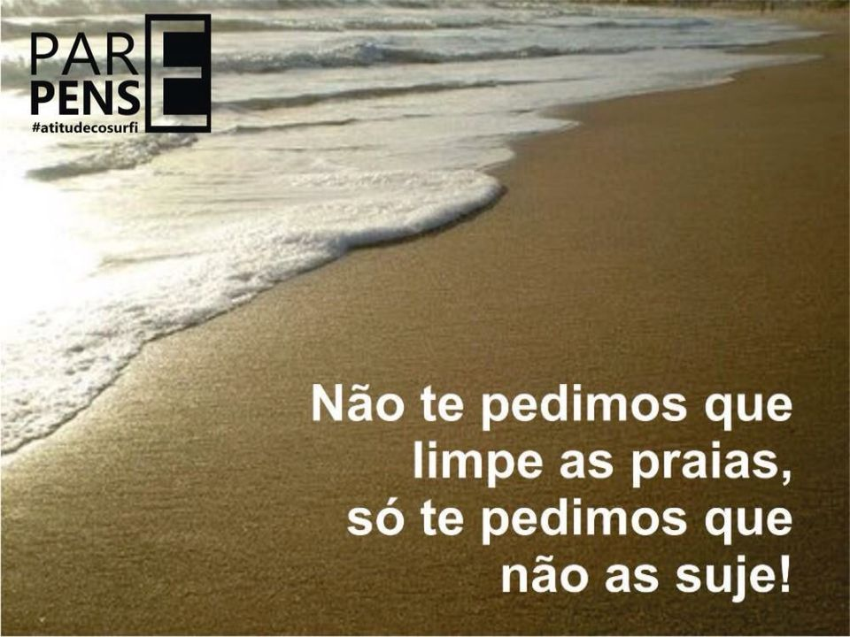

A poluição marinha é um problema crescente em todo o mundo, que vem aumentando sistematicamente a cada ano devido ao descarte irregular de diferentes tipos de resíduos e à falta de medidas sustentáveis. Por causa da poluição dos oceanos, a pergunta pode e deve ser feita: o que exatamente é necessário para controlar e reduzir a poluição dos oceanos? Saiba que a resposta a esta pergunta é muito ampla e depende da ação coletiva, da unidade de todos. A situação atual da poluição marinha é catastrófica, mas do ponto de vista ambiental pode ser revertida ou pelo menos mitigada por medidas mais responsáveis. Para que a mudança ocorra, dois pilares são fundamentais: pessoas e empresas.
Para incentivar mudanças de atitudes quanto ao descarte do lixo, muitos programas, assim como o Recicla, promovem campanhas que induzem à reflexão sobre os comportamentos mais adequados em relação ao destino do lixo produzido, levando educação de qualidade sobre o tema. Dá aquela força na sua rede!
É importante recolher todo o lixo produzido por sua família durante o passeio, portanto, não esqueça de separar uma sacolinha para essa função antes de ir à praia. Se ela for feita de material biodegradável, melhor ainda! Dessa forma, o impacto ambiental será menor. Quando sair da praia, se as lixeiras disponibilizadas pela Prefeitura da cidade ou pelos comerciantes estiver muito cheia, não jogue seu saquinho por cima de tudo. Leve ele para casa e procure um local adequado. Se você é fumante, nunca descarte as bitucas na areia, muito menos nas latas de alumínio ou nas garrafas de vidro. Isso pode prejudicar ou até inviabilizar a reciclagem dos itens. Leve um recipiente específico e se não houver um ponto de coleta para reciclagem de bitucas, descarte no lixo comum. Pesquisas indicam que as bitucas são campeãs de descarte incorreto no país.
1- Use garrafas de água reutilizáveis em vez de garrafas PET. O plástico é um dos maiores problemas ambientais do oceano, prejudicial à fauna e causando enormes danos aos ecossistemas. Um dos principais poluentes do oceano
2- Escreva para políticos e líderes de sua área sobre iniciativas que podem impedir que os poluentes de sua cidade entrem no oceano. 3- Existe um programa chamado Sing Up to Clean Up. O plano, que inclui a limpeza de praias, abrange vários países, inclusive o Brasil. Mas se você evitar jogar seu lixo no mar durante as férias, você já contribuiu.
3- Se você é fumante, use bituca de cigarro ou piteira. As pontas de cigarro não são biodegradáveis e são uma grande preocupação ambiental. Saiba mais em "Pontas de cigarro: um grande vilão ambiental".
4- Separe os resíduos recicláveis. Adquirir esse hábito seria um grande passo para contribuir com o meio ambiente.
5- Use caneca de café ou de água no trabalho, artigos de piquenique e sacolas de compras que sejam reutilizáveis. Itens que possam ser reutilizados inúmeras vezes evitam o consumo e o descarte excessivo de materiais.
6- Compre menos. Isso reduz a quantidade de itens manufaturados que acabam parando nos mares.
7- Por fim, mas não menos importante, envie emails para empresas pedindo que diminuam o volume de suas embalagens e criando novas que sejam biodegradáveis.
 